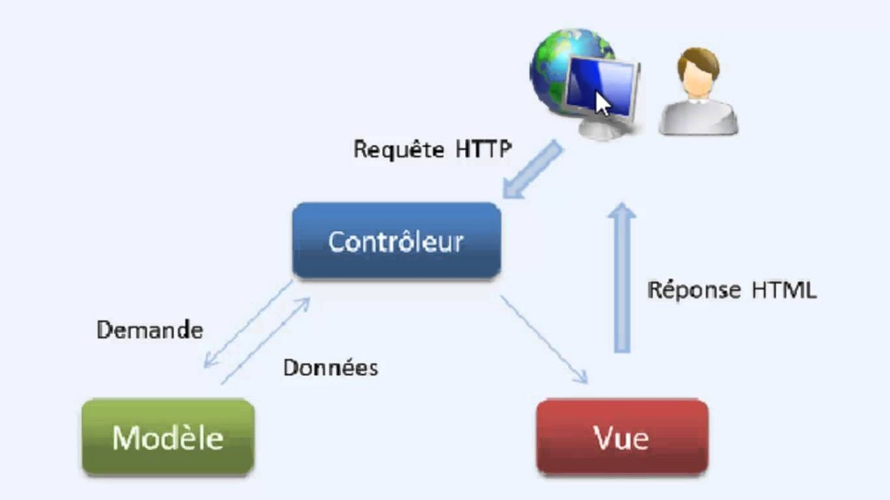

Lorsque nous parlons de frameworks qui fournissent une interface graphique à l’utilisateur (soit
une page web, comme ici avec Django, soit l’interface d’une application graphique classique,
comme celle de votre traitement de texte par exemple), nous parlons souvent de l’architecture
MVC. Il s’agit d’un modèle distinguant plusieurs rôles précis d’une application, qui doivent être
accomplis. Comme son nom l’indique, l’architecture (ou « patron ») Modèle-Vue-Contrôleur
est composé de trois entités distinctes, chacune ayant son propre rôle à remplir.
Tout d’abord, le modèle représente une information enregistrée quelque part, le plus souvent
dans une base de données. Il permet d’accéder à l’information, de la modifier, d’en ajouter
une nouvelle, de vérifier que celle-ci correspond bien aux critères (on parle d’intégrité de
l’information), de la mettre à jour, etc. Il s’agit d’une interface supplémentaire entre votre code
et la base de données, mais qui simplifie grandement les choses, comme nous le verrons par la
suite.
Ensuite la vue qui est, comme son nom l’indique, la visualisation de l’information. C’est la
seule chose que l’utilisateur peut voir. Non seulement elle sert à présenter une donnée, mais
elle permet aussi de recueillir une éventuelle action de l’utilisateur (un clic sur un lien, ou la
soumission d’un formulaire par exemple). Typiquement, un exemple de vue est une page web,
ni plus, ni moins.
Finalement, le contrôleur prend en charge tous les événements de l’utilisateur (accès à une
page, soumission d’un formulaire, etc.). Il se charge, en fonction de la requête de l’utilisateur, de
récupérer les données voulues dans les modèles. Après un éventuel traitement sur ces données, il
transmet ces données à la vue, afin qu’elle s’occupe de les afficher. Lors de l’appel d’une page,
c’est le contrôleur qui est chargé en premier, afin de savoir ce qu’il est nécessaire d’afficher
